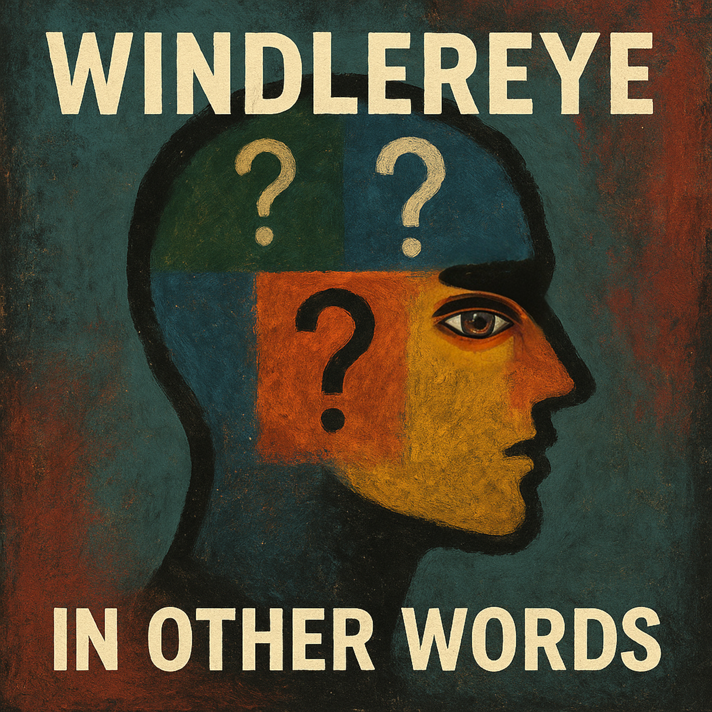

[Verse 1]
There's something wrong with the sky
I have never seen a color like this
It's not an omen, it's a sign
It's just a glimpse of what we've missed
Cars move slower than usual today
Not in a dream sense - just slightly delayed
I count the seconds between each pass
They keep stretching
Then returning
Maybe time can't decide what to track
[Pre-Chorus]
I keep recording every shift
Just to prove I'm not mistaken
But every second that I lift
Another boundary is shaken
[Chorus]
I think I'm phasing
Not drifting, not imagining
My steps land real but the world keeps adjusting
Nothing breaks
But nothing stays aligned
I keep holding on to facts
And they keep slipping out of line
(I think)
[Verse 2]
Inside the station
The announcements repeat incorrectly
The same phrase with one word swapped every run
I write it down to confirm I'm not mistaken
The pattern isn't symbolic
It's just wrong
In a way that doesn't match anything I've known
[Bridge]
I test my pulse
I read the signs twice
I ask a stranger for the exact time
They answer
Pause
Then answer again with a different number
Neither seems forced
Both are spoken plainly
And both cannot be right
[Chorus]
I think I'm phasing
Not drifting, not imagining
My steps land real but the world keeps adjusting
Nothing breaks
But nothing stays aligned
I keep holding on to facts
And they keep slipping out of line
[Outro]
I think I'm phasing
Not drifting, not imagining
My steps land real but the world keeps adjusting
Nothing breaks
But nothing stays aligned
I keep holding on to facts
And they keep slipping out of line
[Verse 1]
I've pressed twenty snoozes on my phone
I smell of last night alcohol
I am so late and work starts at eight
I stumble through the door and start my day
[Verse 2]
The boss said "fine," but he meant "go home"
My head's a drum that lost its tone
Wallet's gone and rent's unpaid
Guess it's just a bad lunar day
[Chorus]
Everything's wrong in the simplest way
My keys don't fit, my hands just sway
I swear the clocks have turned their backs
And every road leads off the tracks
[Bridge]
Some say patterns, some say fate
I call it physics in disguise
But deep down... Oh so deep down...
I know I'm late
[Chorus]
Everything's wrong in the simplest way
My keys don't fit, my hands just sway
I swear the clocks have turned their back
And every road leads off the tracks
[Verse 3]
Streetlights flick on before it's night
I walk too long, my breath feels tight
If I just did what I always say
Would my luck still look away?
[Chorus]
Everything's wrong in the simplest way
My keys don't fit, my hands just sway
I swear the clocks have turned their backs
And every road leads off the tracks
[Outro]
I'll try again tomorrow
When the moon's got nothing left to say.
[Verse 1]
The more you have, the more you need...
The more you need, the more you get...
And every gain resets the count,
And every count resets the threat.
I watch the fall and call the debt.
[Verse 2]
I tried to quiet down the drive,
But quiet turns into regret.
I track the patterns as they shift,
Then wake at dawn already bent.
My thoughts revise themselves and press.
[Chorus]
It's not enough
I measure, I plan, I rise, I stall.
It's never enough
I finish one task and hit a wall.
I get to the goal, it moves again.
I hold the line, but lose the when.
It's not enough...
IT'S NOT ENOUGH!
[Verse 3]
I learned to question every win,
The smallest gain demands a cost.
I built routines to keep me pinned,
But pinned can drift and leave me lost.
I check the charts, they loop on sin.
[Bridge]
I ran the math through restless nights.
I cut the noise to read the signs.
I told myself the shift was slight -
But slight becomes the closing vice.
I see the trend.
I mark the rise.
[Chorus]
It's not enough
I measure, I plan, I climb, I stall.
It's never enough
I finish one task and hit a wall.
I get to the goal, it moves again.
I hold the line, but lose the when.
It's not enough...
IT'S NOT ENOUGH!
[Outro]
I keep the record, page by page.
I keep the margin clean and tough.
I keep the sum in quiet rage.
I keep on going...
Keep on going...
It's not enough.
It's not enough.
[Verse 1]
Doctor recommended diving headfirst
Hallucinations are such a blessing
And they are such a curse
He wrote it plainly in the margin of his notebook
Said "it's the only way out" and gave me the look
[Verse 2]
He placed the chart on the table with a practiced hand
Said the patterns repeat when you try to stand
Said time is space that never expands
That you either change your step
Or you stay where you land
[Chorus]
Doctor Doug you warned me calmly
That clarity comes with a cost
Doctor Doug you told me plainly
That nothing returns once it's lost
I held on to every instruction
But the rules kept changing shape
Doctor Doug you watched in silence
When I tried to keep myself safe
[Verse 3]
He asked me why I kept rewriting the same report
Why I circled the lines but never filed the form
Why I filled the calendar with calls for support
Why I called every warning sign
Am I just another false alarm?
[Bridge]
He said progress is a number you refuse to write
He said answers appear when you stop trying to be right
He said nothing changes while you wait for the night
He said waiting is the habit you must fight
[Chorus]
Doctor Doug you warned me calmly
That clarity comes with a cost
Doctor Doug you told me plainly
That nothing returns once it's lost
I held on to every instruction
But the rules kept changing shape
Doctor Doug you watched in silence
When I tried to keep myself safe
[Outro]
He folded the chart
Said he'd see me next week
Said improvement is slow
But never weak
And he asked if I understood
I said I think so
But I'll need some time
He nodded
And that was the first time...
[Verse 1]
They patched the skies and broke the moon again
A call came through, but it was not from them
The line went flat, the voice went still
The road was wet, and the glass did spill
[Chorus]
It's gonna be a long night
The clock is staring through the blinds
It's gonna be a long night
I cannot tell wrong from right
Every word feels heavier
When it's said too late to matter...
It's gonna be a long night
[Verse 2]
The porch light hums, the chair won't move
A cup half-full, no one to prove
The message hangs like breath in frost
You said "you drive". I said "get lost"
[Bridge]
The neighbors sleep through every sound
The air forgets to move around
The car outside, it's not the one
The headlights fade before they come
[Chorus]
It's gonna be a long night
The clock is staring through the blinds
It's gonna be a long night
It's gonna be a long night
I cannot tell wrong from right
Every word feels heavier
When it's said too late to matter...
It's gonna be a long night
[Chorus]
It's gonna be a long night
The clock is staring through the blinds
It's gonna be a long night
I cannot tell wrong from right
Every word feels heavier
When it's said too late to matter...
[Outro]
It's gonna be a long night...
[Verse 1]
Duct tape on my dashboard,
The radio stops,
The inside of my body flows,
As a haunted house with the lights on.
I swear I heard the ceiling breathe,
My shadow's walking slightly ahead,
Keeps asking where I've been.
But maybe that's just me again,
[Pre-Chorus]
I don't remember sleeping, but I woke up anyway,
With sort-of glitter in my pockets and a memory far away.
[Chorus]
But I'm fine. Yeah, I'm fine,
Don't mind the static clicking in my spine.
Have I blinked too long? Did I lose some time?
But it's fine... I'm fine.
Everybody dreams of floating sometimes,
Right?
Right.
[Verse 2]
Someone rearranged my memories
Alphabetically, overnight,
And left sweat in my shoes and clothes
Indistinct chatter, "Loved the flight."
My phone dialed numbers
I swear I never learned,
And my heartbeat taps and fumbles
It is waiting to return.
[Pre-Chorus]
I keep laughing at the sky like it's an inside joke,
And all the streetlights flicker back —
I guess they liked the smoke.
[Chorus]
But I'm fine. Yeah, I'm fine,
Don't mind the static clicking in my spine.
Have I blinked too long? Did I lose some time?
But it's fine... I'm fine.
Everybody dreams of floating sometimes,
Right?
Right.
[Bridge]
I tell myself,
"This is totally normal"
In a voice that's not exactly mine.
[Breakdown]
And when the night folds open
Like a fortune teller,
I keep landing on the lines
That say "We hope you get better"
But that's probably...
Well I don't know.
Hope?
[Outro]
Something outside knocks politely twice...
But I'm fine.
I'm fine
[Intro]
I was in a gas station bathroom,
The mirror was flickering,
Like, in and out of existence,
And you were standing in the hallway
Eating a grapefruit with a spoon.
I said, "You know, I think my life is a rerun,"
And you just nodded, slow, like you'd heard it all before.
Then the sink turned into a television,
And the guy on the screen whispered,
"Step outside, your side is leaking."
So I did.
[Verse 1]
Neon fingers tapping on the windowpane,
Old man in a spacesuit humming Purple Rain.
I asked him if the bus was late
He checked his wrist and showed me a triple eight
It had my face scratched into the faceplate
I couldn't translate
But a thought is a calm thing when you hold it tight
The streetlights bent sideways in the middle of the night.
[Chorus]
I am living in the third wall!
The plaster is wet and I'm afraid to call
The operator says the lines are cut
Says keep your mouth shut
But gravity is leaking from the ceiling fan
I'm doing the best I can
To stand...
Still.
[Interlude]
So I went to work.
But the elevator buttons were just teeth.
Molars, specifically.
I pressed the one for the fourth floor and it bit my thumb.
I didn't bleed, though.
Instead of blood,
A long piece of red ribbon came out of my skin.
I pulled on it. It just kept coming.
Yards of it piled up on the floor.
The secretary walked by and said,
"Happy Birthday, you're unwrapping."
[Verse 2]
There is a wire inside the dry-wall
I hear it scratching when the numbers fall
My mother called on a plastic phone
She said son, you are not alone
You are a frequency stuck in mental dysfunction
Snap
The ribbon tangled in the violent air
I looked in the mirror but I wasn't there.
[Chorus]
I am living in the third wall!
The plaster is wet and I'm afraid to call
The operator says the lines are cut
Says keep your mouth shut
But gravity is leaking from the ceiling fan
I'm doing the best I can
To stand...
Still.
[Outro]
I sat on the curb.
The sky was made of plywood.
I could see the grain.
You came back with the grapefruit.
You said, "Are you done?"
I said, "I think I'm scripted."
You handed me the spoon.
It was heavy.
It was the only real thing left.
[Verse 1]
Could you tell the truth from the start?
I thought as I was staring up
The dark kept folding around the stars
As if someone boxed them shut
And I sealed the quiet with a careful thumbprint
That hurt in the gut
[Verse 2]
The street behind me held its breath
Trying to keep the scene intact
Lights in windows leaning toward death
As if they'd overheard the pact
Of souls leaving without warning
Of sad old empty bodies mourning
[Chorus]
The world is breaking into flames,
Each shadow calling out my name.
The sky will crack, the stars will fall,
I feel it rising through us all.
I reach for nothing, I lose my fight,
"Goodbye" is screaming in the night.
[Verse 3]
A pocket of wind pulled at my sleeve
Like it wanted an answer I couldn't give
Someone's old laughter lived in the leaves
But it deeply shrieked "I WANT TO LIVE!"
And it shook a loose corner of the sky
"GOOD BYE!!!... Good bye."
[Pre-Chorus]
I whispered the memory of a voice
That once cracked open a day
[Chorus]
The world is breaking into flames,
Each shadow calling out my name.
The sky will crack, the stars will fall,
I feel it rising through us all.
I reach for nothing, I lose my fight,
"Goodbye" is screaming in the night.
[Chorus]
The world is breaking into flames,
Each shadow calling out my name.
The sky will crack, the stars will fall,
I feel it rising through us all.
I reach for nothing, I lose my fight,
"Goodbye" is screaming in the night.
[Verse 1]
No sleep in five days
I'm startin' to lose control
They said "just play the playlist,
Kids love it when it loops."
[Chorus]
Idiotic children songs! Idiotic children songs!
[Verse 2]
The chicken! The chicken!
The chicken is so hungry!
The chicken! The chicken!
The chicken is so hungry!
[Verse 3]
My grandma drives a car,
Choo choo, get aboard!
She honks at all the sparrows,
THEY THINK SHE IS THEIR LORD!
[Verse 4]
Eat your foods: vegetables and fruit!
Lick the tires of cars, swallow a flute!
[Chorus]
Idiotic children songs! Idiotic children songs!
[Verse 5]
The cat is bad. It's evil. Do not trust him
[Verse 6]
THE NOISE SONG!
SING WITH ME!
WOHF WOHFPEE WOHF WOHFPEE WIIF WOHF WOHFPEE WOEEH WIIF!
[Verse 7]
Cough, cough, cough, cough!
Laugh, laugh, laugh, laugh!
Party party poop-y pooper!
[Chorus]
Idiotic children songs! Idiotic children songs!
[Outro]
No sleep in five days...
And the songs won't fade.
If you see my eyes rolling,
Please just walk me to the shade.